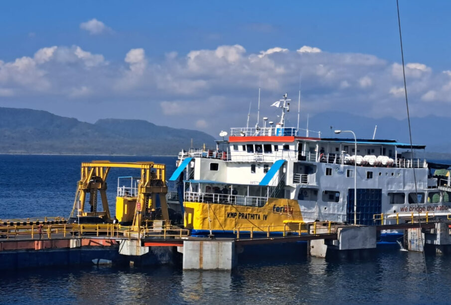

Tips Memilih Transportasi
Untuk memilih transportasi ke Banyuwangi, pertimbangkan waktu, anggaran, dan kenyamanan. Jika prioritas Anda adalah kecepatan, pilihlah pesawat untuk penerbangan langsung ke Bandara Banyuwangi . Untuk pilihan yang lebih hemat dan santai, kereta api adalah opsi yang baik, meskipun memerlukan waktu lebih lama. Bus adalah pilihan paling terjangkau, namun membutuhkan waktu paling lama untuk tiba di Banyuwangi. Jika Anda berada di Bali, ferry dari Gilimanuk ke Ketapang adalah rute yang praktis.